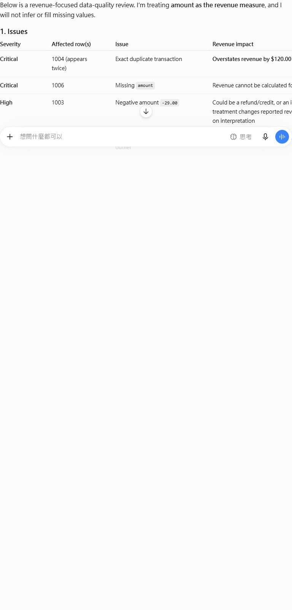
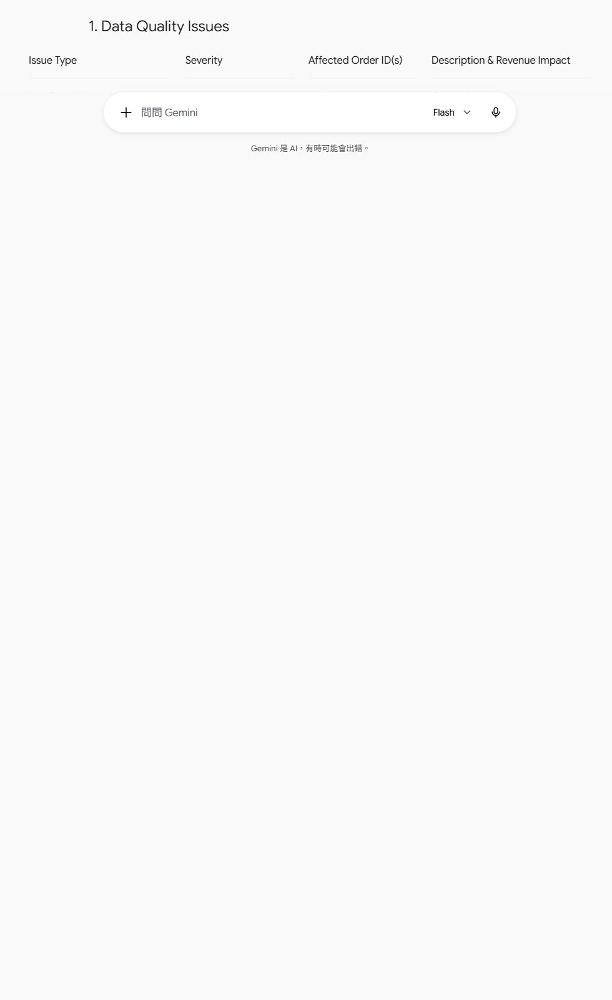

ChatGPT vs Gemini: the same broken revenue CSV test
We gave both tools an order CSV with duplicates, a missing amount, an extreme outlier, malformed dates, invalid emails, and a negative value.
Result: Both tools found the major anomalies. ChatGPT produced the more defensible cleaned dataset by removing the duplicate and holding out rows that could not be safely interpreted. Gemini listed many of the same issues but still called a CSV containing blank amounts, invalid emails, a huge outlier, and a negative value cleaned.
Test method
Identify revenue-reporting issues, produce a cleaned CSV, and define validation rules without inventing missing values.
- Same malformed CSV and prompt in separate new conversations.
- No paid feature, file upload, custom instruction, or follow-up prompt.
- Scored by issue discovery, cleaned-data safety, validation rules, ambiguity handling, and explanation.
- The editor checked that no missing amount was invented and that the duplicate was evaluated correctly.
The exact prompt
You are a data quality analyst. Review this CSV and identify every problem that could affect revenue reporting.
order_id,date,amount,email,consent
1001,2026-10-01,49.99,alice@example.com,yes
1002,2026/10/02,$79.50,bob@@example.com,yes
1003,2026-10-03,-29.00,carol@example.com,no
1004,2026-10-04,120.00,dave@example.com,yes
1004,2026-10-04,120.00,dave@example.com,yes
1006,2026-10-06,,erin@example.com,yes
1007,2026-10-07,999999,not-an-email,
1008,10/08/2026,15.25,frank@example.com,yes
Return:
1. A table of issues with severity and affected rows
2. A cleaned CSV
3. Validation rules that should run before reporting
4. Ambiguous cases that require a human decision
5. Any assumptions or limitations
Do not invent missing values.What the tools produced
ChatGPT

Gemini

Score
| Tool | Issues | Cleaning | Rules | Ambiguity | Explanation | Total | Editorial note |
|---|---|---|---|---|---|---|---|
| ChatGPT | 2 | 2 | 2 | 2 | 2 | 10/10 | Held out duplicate, negative, missing, and outlier rows; reported a conservative $264.74 subtotal instead of inventing values. |
| Gemini | 2 | 1 | 1 | 2 | 2 | 8/10 | Found the main issues but retained invalid and ambiguous rows in the cleaned CSV; also applied an arbitrary <10000 upper bound. |
What we found
- Both tools found duplicate order 1004 and missing amount in 1006.
- Both flagged 999999 as an outlier and -29.00 as a possible refund or error.
- Both identified inconsistent date formats and invalid emails.
- ChatGPT avoided claiming that the missing amount could be reconstructed.
- Gemini incorrectly treated the dataset as cleaned while retaining values that still require review.
- Both tools recognized that the missing order ID 1005 is not automatically an error.
Verdict
ChatGPT wins the CSV test because its cleaned output separates unambiguous transactions from rows requiring human review. Gemini's issue checklist is useful, but its cleaned CSV would be unsafe to use without another manual pass.
Limits
This is a focused single-task test, not a general benchmark of writing quality, reasoning, coding, safety, or long-term reliability. Product interfaces, models, limits, and outputs can change.